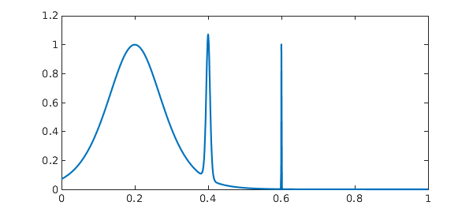
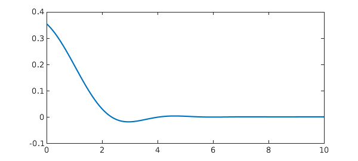
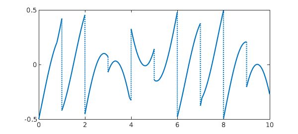
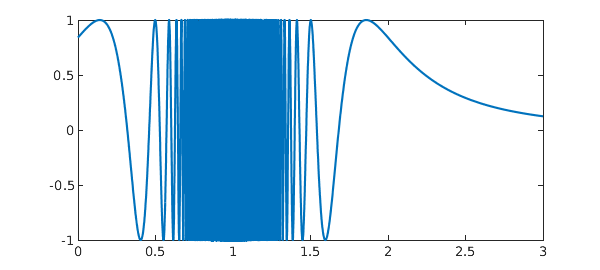

0. Introduction
FJ gave a talk at ENS Lyon today with a number of examples in it that intrigued LNT. Here we play with some of those examples in Chebfun. Now Chebfun is just numerical, with no guarantees of accuracy, which means it is not a competitor for FJ's Arb method of rigorous quadrature [1]. The point of this example is only to see how Chebfun does, unrigorously in floating point arithmetic, on some challenging examples people have cooked up over the years.
We find that in all but one of these examples, Chebfun very nicely gets a highly accurate answer. Example 3, however, shows difficulties with a function with a lot of discontinuities.
1. Three spikes
This problem comes from R. Cranley and T. N. L. Patterson, On the automatic numerical evaluation of definite integrals, The Computer Journal 14 (1971), 189-198. It also appeared in D. K. Kahaner, Comparison of numerical quadrature formulas, in J. R. Rice, ed., Mathematical Software, Academic Press, 1971, 229-259. See also the earlier Chebfun example www.chebfun.org/examples/quad/SpikeIntegral.html.
format long ff = @(x) 1/cosh(10*(x-.2))^2 + 1/cosh(100*(x-.4))^4 + 1/cosh(1000*(x-.6))^6; Iexact = 0.210802735500549277 tic, f = chebfun(ff,[0 1]), I = sum(f); toc plot(f)
Iexact =
0.210802735500549
f =
chebfun column (1 smooth piece)
interval length endpoint values
[ 0, 1] 14020 0.071 4.5e-07
vertical scale = 1.1
Elapsed time is 1.988905 seconds.

Note that turning on splitting doesn't make much difference to speed.
tic, f = chebfun(ff,[0 1],'splitting','on'), I = sum(f); toc
f =
chebfun column (6 smooth pieces)
interval length endpoint values
[ 0, 0.38] 74 0.071 0.11
[ 0.38, 0.44] 87 0.11 0.034
[ 0.44, 0.59] 42 0.034 0.0015
[ 0.59, 0.6] 97 0.0015 0.0055
[ 0.6, 0.62] 76 0.0055 0.00081
[ 0.62, 1] 23 0.00081 4.5e-07
vertical scale = 1.1 Total length = 399
Elapsed time is 0.476923 seconds.
2. Violent oscillation
This problem comes from S. M. Rump, Verification methods: rigorous results using floating-point arithmetic, Acta Numerica, 19 (2010), 287-449. It is also discussed in W. Tucker, Validated Numerics: A Short Introduction to Rigorous Computations, Princeton U. Press, 2011.
ff = @(x) sin(x+exp(x)); Iexact = 0.34740017265724780787 tic, f = chebfun(ff,[0 8]), I = sum(f), toc plot(f)
Iexact =
0.347400172657248
f =
chebfun column (1 smooth piece)
interval length endpoint values
[ 0, 8] 3802 0.84 -0.96
vertical scale = 1
I =
0.347400172657247
Elapsed time is 0.052364 seconds.
3. Violent oscillation with 2979 discontinuities
If we try this with default parameters, we get a warning related to Chebfun's default preference values splitMaxLength = 6000.
ff = @(x) (exp(x)-floor(exp(x)))*sin(x+exp(x)); Iexact = 0.098651704478365206119 tic, f = chebfun(ff,[0 8],'splitting','on'); I = sum(f), toc
Iexact = 0.098651704478365 Warning: Function not resolved using 6089 pts. I = 0.087881488553783 Elapsed time is 0.509215 seconds.
By increasing splitMaxLength greatly, we can get an answer but it's outrageously slow and it's only accurate to 6 digits. Specifically, the commands
I = sum(chebfun(ff,[0 8],'splitting','on','splitMaxLength',1e6))give the result I = 0.0986522613... after 72 seconds. We are well aware that Chebfun is slow for problems with many discontinuities, but for it to lose ten digits of accuracy looks like a bug somewhere. (I have confirmed by adding up the pieces by hand that the ``exact'' answer is correct.)
It would be good to investigate why this integral is giving such trouble.
4. Error function
This problem comes from Silviu Filip.
ff = @(x) exp(-x)*erf(sqrt(1250)*x+1.5); Iexact = NaN tic, f = chebfun(ff), I = sum(f), toc plot(f)
Iexact =
NaN
f =
chebfun column (1 smooth piece)
interval length endpoint values
[ -1, 1] 399 -2.7 0.37
vertical scale = 2.7
I =
-0.999065350291923
Elapsed time is 0.027972 seconds.
5. Airy function
This problem comes from FJ.
ff = @(x) exp(-x)*airy(-x); Iexact = 0.378751605379086535 tic, f = chebfun(ff,[0 inf]), I = sum(f), toc plot(f)
Iexact =
0.378751605379087
f =
chebfun column (1 smooth piece)
interval length endpoint values
[ 0, Inf] 415 0.36 -2.9e-15
vertical scale = 0.36
Warning: Result may not be accurate as the function decays slowly at
infinity.
I =
0.378751605379085
Elapsed time is 0.572451 seconds.

We compare this with the result on a sufficiently large finite interval:
tic, f = chebfun(ff,[0 40]), I = sum(f), toc
f =
chebfun column (1 smooth piece)
interval length endpoint values
[ 0, 40] 121 0.36 7.4e-18
vertical scale = 0.36
I =
0.378751605379087
Elapsed time is 0.024031 seconds.
6. Absolute value of polynomial
This problem was posed by Harald Helfgott on MathOverflow, https://mathoverflow.net/questions/123677/rigorous-numerical-integration. See also A. Mahboubi, G. Melquiond, and T. Sibut-Pinote, Formally verified approximations of definite integrals, International Conference on Interactive Theorem Proving, Spring, 2016, 274-289.
ff = @(x) abs(x^4+10*x^3+19*x^2-6*x-6)*exp(x); Iexact = 11.1473105500571397339 tic, f = chebfun(ff,[0 1],'splitting','on'), I = sum(f), toc plot(f)
Iexact =
11.147310550057140
f =
chebfun column (2 smooth pieces)
interval length endpoint values
[ 0, 0.62] 13 6 1e-14
[ 0.62, 1] 11 1.8e-14 49
vertical scale = 49 Total length = 24
I =
11.147310550057142
Elapsed time is 0.049970 seconds.

7. A ceiling function
This is an integral representation of the triangular sum that Gauss famously figured out as a schoolboy. See B. Hayes, Gauss's day of reckoning, American Scientist 94 (2006), 200-205.
ff = @(x) ceil(x); Iexact = 5050 tic, f = chebfun(ff,[0 100],'splitting','on'); I = sum(f), toc plot(f)
Iexact =
5050
I =
5050
Elapsed time is 0.655413 seconds.
8. Another non-smooth function
ff = @(x) (x-floor(x)-1/2)*max(sin(x),cos(x)); Iexact = -0.14281864202632808376 tic, f = chebfun(ff,[0 10],'splitting','on'); I = sum(f), toc plot(f)
Iexact = -0.142818642026328 I = -0.142818642026329 Elapsed time is 0.156323 seconds.

9. From Brisebarre and Joldes
This example comes from Mioara Joldes, Rigorous Polynomial Approximations and Applications, PhD thesis, ENS Lyon, 2011. The source of the integral is C.-Y. Chen, Computing interval enclosures for definite integrals by application of triple adaptive strategies, Computing, 78 (2006), 81-99. It requires a Chebfun of length more than a million.
ff = @(x) sin((0.001+(1-x)^2)^(-3/2)); Iexact = 0.74997436852719477011 tic, f = chebfun(ff,[0 3],'maxLength',1e7), I = sum(f), toc plot(f)
Iexact =
0.749974368527195
f =
chebfun column (1 smooth piece)
interval length endpoint values
[ 0, 3] 1239813 0.84 0.12
vertical scale = 1
I =
0.749974368527196
Elapsed time is 7.062504 seconds.
It is interesting to note the near-zero region near x=1 here. That's incorrect, but has negligible effect on the integral.
Splitting on is hard work too, but at least it eventually gets the right answer, and this time with a more convincing plot.
tic, f = chebfun(ff,[0 3],'splitting','on','splitMaxLength',1e6); I = sum(f), toc plot(f)
I = 0.749974368527184 Elapsed time is 8.295957 seconds.

Reference
Not much has been done on rigorous extended precision arithmetic, but FJ's Arb library is a contribution in this area:
[1] F. Johansson, Numerical integration in arbitrary-precision ball arithmetic, arXiv:1802.07942.